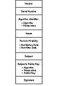

| Previous | Table of Contents | Next |
KryptoKnight (Kryptonite—get it?) is an authentication and key distribution system designed by IBM. It is a secret-key protocol and uses either DES in CBC mode (see Section 9.3) or a modified version of MD5 (see Section 18.5).
KryptoKnight supports four security services:
From a user’s perspective, KryptoKnight is similar to Kerberos. Some differences are:
KryptoKnight has tickets and authenticators, just like Kerberos. It has TGSs, but KryptoKnight calls them authentication servers. KryptoKnight’s designers spent considerable effort minimizing the number of messages, lengths of messages, and amount of encryption. For further information on KryptoKnight, read [1110, 173, 174, 175].
SESAME stands for Secure European System for Applications in a Multivendor Environment. It’s a European Community security project, 50 percent funded by RACE (see Section 25.7), whose primary objective is producing technology for user authentication with distributed access control. Think of it as kind of a European version of Kerberos. It’s a two-part project: Stage one is a basic prototype of the architecture, and stage two is a set of commercial projects. The three companies with the greatest hand in development are ICL in the United Kingdom, Siemens in Germany, and Bull in France.
SESAME is an authentication and key-exchange system [361, 1248, 797, 1043]. It uses the Needham-Schroeder protocol, with public-key cryptography to communicate between different security domains. The system is seriously flawed in several respects. Instead of using a real encryption algorithm, they use XOR with a 64-bit key size. Even worse, they use XOR in CBC mode, which leaves half the plaintext unencrypted. In their defense, they planned on using DES until the French government complained; they validated the code with DES but then removed it, and expect people to add it back. I am unimpressed nonetheless.
Authentication in SESAME is a function on the first block of a message, not on the entire message. This has the effect of authenticating “Dear Sir” and not the body of a letter. Key generation consists of two calls to the UNIX rand function, which isn’t very random. SESAME uses crc32 and MD5 as one-way hash functions. And of course, SESAME is vulnerable to Kerberos-like password-guessing.
The Common Cryptographic Architecture (CCA) was designed and developed by IBM to provide cryptographic primitives for confidentiality, integrity, key management, and personal identification number (PIN) processing [751, 784, 1025, 1026, 940,752]. Keys are managed by control vectors (CVs) (see Section 8.5). Every key has a CV XORed with it and is never separated from the vector unless inside secure hardware. The CV is a data structure providing an intuitive understanding of the privileges associated with a particular key.
The individual bits of the CV are defined to have specific meanings for using and handling each key managed by CCA. The CV is carried with the encrypted key in data structures called key tokens. Internal key tokens are used locally and contain keys encrypted under the local master key (MK). External key tokens are used to export and import encrypted keys between systems. Keys in external key tokens are encrypted under key-encrypting keys (KEK). The KEKs are managed in internal key tokens. Keys are separated according to their permitted uses.
Key length is also specified and enforced using bits in the CV. Single length keys are 56 bits and are used for such functions as privacy and message authentication. Double length keys are 112 bits and are used for key management, PIN functions, and other special uses. Keys can be required to be DOUBLE-ONLY in which both the left and right halves of the key must be different, DOUBLE in which the halves are permitted to be equal by chance, SINGLE-REPLICATED in which the left and right halves are equal, or SINGLE which contains only 56 bits. The CCA functions specify hardware enforcement of certain key types to be used for some operations.
The CV is checked in a secure hardware processor: It must conform to the permitted CCA rules for each CCA function. If the CV successfully passes the test requirements, a variant of the KEK or MK is obtained by the XOR of the KEK or MK with the CV, and the plaintext target key is recovered for use internally with the CCA function. When new keys are generated, the CV specifies the uses of the generated key. Those combinations of key types that could be used in attacking the system are not generated or imported into a CCA-compliant system.
CCA uses a combination of public-key cryptography and secret-key cryptography for key distribution. The KDC shares a secret master key with each user and encrypts session keys using that master key. Master keys are distributed using public-key cryptography.
The system’s designers chose this hybrid approach for two reasons. The first is performance. Public-key cryptography is computationally intensive; if session keys are distributed using public-key cryptography, the system might bog down. The second is backwards compatibility; this system can be overlaid on existing secret-key schemes with minimal disruption.
CCA systems are designed to be interoperable. For systems that are non-CCA compliant, a Control Vector Translate (CVXLT) function permits keys to be passed between the two implementations. Initialization of the CVXLT function requires dual control. Two individuals must set up the required translation tables independently. Such dual control provides a high degree of assurance concerning the integrity and pedigree of any keys introduced into the system.
A key of type DATA is provided for compatibility with other systems. A DATA key is stored with a CV that identifies the key as a DATA key. DATA keys can have broad uses and as such must be regarded with suspicion and used with care. DATA keys may not be used for any key management functions.
The Commercial Data Masking Facility (CDMF) provides an exportable version of CCA. It has a special feature that reduces DES keys to an effective 40 bits for export (see Section 15.5) [785].
Public-key cryptography has been recommended for use with the ISO authentication framework, also known as the X.509 protocols [304]. This framework provides for authentication across networks. Although no particular algorithms are specified for either security or authentication, the specification recommends RSA. There are provisions, however, for multiple algorithms and hash functions. X.509 was initially issued in 1988. After public review and comment, it was revised in 1993 to correct some security problems [1100, 750].

Figure 24.2 An X.509 certificate.
| Previous | Table of Contents | Next |
){kind=link}
){kind=link}